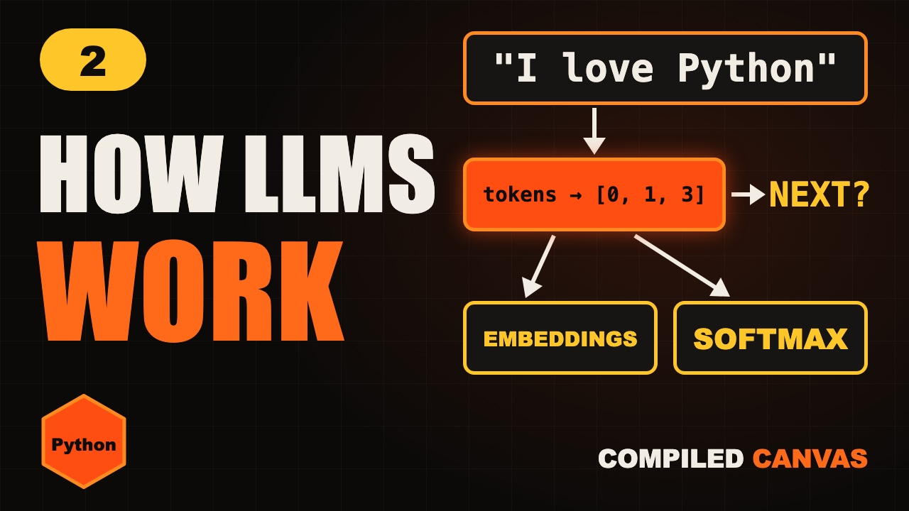

Home / Generative AI / Lesson 2
Lesson 2 · PythonHow LLMs Work: Tokens, Embeddings, Next Token
How LLMs work, explained simply: tokens, embeddings and next-token prediction, with each step built in Python.

1It reads numbers
When you type a question into a chatbot, it never sees your words. It sees numbers.
And under all the magic, it only ever answers one small question. What comes next?
By the end of this video, you'll know exactly how that works. And you'll build each step in Python.
2What is an LLM?
LLM stands for large language model. Let's take it one word at a time.
Language model means it predicts the next piece of text. Like the autocomplete on your phone keyboard.
Large means it has billions of numbers inside it, called parameters. It learned them by reading a huge amount of text.
So an LLM is your phone's autocomplete, made enormously bigger and smarter.
3Tokens
Step one. The text is cut into small pieces called tokens.
A token can be a whole word, part of a word, or a symbol. A long word like unbelievable might be split into a few pieces.
A handy rule for English. One token is about three quarters of a word. So a hundred tokens is roughly seventy five words.
Each token has an ID number. The model only ever sees these numbers.
4Tokens in Python
Type it out yourself, or copy it. It runs with python3 tokens.py.
vocab = {"i": 0, "love": 1, "java": 2, "python": 3}
def tokenize(text):
words = text.lower().split()
return [vocab.get(w, -1) for w in words]
print(tokenize("I love Python")) # [0, 1, 3]
print(tokenize("I love Rust")) # [0, 1, -1][0, 1, 3] [0, 1, -1]
Here's a tiny tokenizer in Python. The vocabulary maps each word to an ID.
Tokenize lowercases the text, splits it, and looks up each word.
Rust isn't in our vocabulary, so it gets minus one. Real tokenizers never get stuck like this. They break unknown words into smaller pieces they do know.
5Embeddings
Step two. An ID like three tells the model nothing about meaning. So each token is turned into a list of numbers, called an embedding.
Think of it as a position on a map of meaning. Words with similar meanings sit close together.
Cat sits near dog. Car sits far away from both. Real models use thousands of numbers for each token, not two.
6Similarity in Python
Type it out yourself, or copy it. It runs with python3 embeddings.py.
import numpy as np
emb = {"cat": np.array([0.9, 0.8]),
"dog": np.array([0.8, 0.9]),
"car": np.array([0.1, -0.9])}
def similarity(a, b):
a, b = emb[a], emb[b]
return a @ b / (np.linalg.norm(a) * np.linalg.norm(b))
print(round(similarity("cat", "dog"), 2)) # 0.99
print(round(similarity("cat", "car"), 2)) # -0.580.99 -0.58
Here are three tiny embeddings, each with just two numbers.
Cosine similarity measures how much two embeddings point the same way. One means the same direction. Minus one means opposite.
Cat and dog score zero point nine nine. Cat and car score minus zero point five eight. The numbers really do capture meaning.
7Picking the next token
Step three. The embeddings flow through the model's layers. We'll open those up in the next episode.
Out comes a score for every possible next token. Take the cat sat on the. Mat gets a high score. Moon gets a low one.
A function called softmax turns the scores into probabilities that add up to one.
The model picks a token, adds it to the text, and asks again. One token at a time, until it's done.
8Softmax in Python
Type it out yourself, or copy it. It runs with python3 next_token.py.
import numpy as np
words = ["mat", "floor", "sofa", "moon"]
scores = np.array([3.0, 2.1, 1.2, 0.5])
probs = np.exp(scores) / np.exp(scores).sum()
for w, p in zip(words, probs):
print(w, round(p, 2))
# mat 0.6 floor 0.25 sofa 0.1 moon 0.05mat 0.6 floor 0.25 sofa 0.1 moon 0.05
Here's softmax in Python. Four words, and a score for each.
Raise e to each score, then divide by the total. Now they add up to one.
Mat gets zero point six. Moon gets just zero point zero five. That's how a model chooses its next word.
9The whole loop
So here's the whole loop. Text becomes tokens. Tokens become embeddings. The layers turn them into scores. Softmax turns scores into probabilities. Pick one, and go again.
How did it learn those billions of numbers? By guessing the next token in a huge amount of text, again and again, and adjusting itself every time it was wrong.
Your turn. Pause. If one token is about three quarters of a word, roughly how many tokens is a three hundred word essay?
About four hundred. Three hundred divided by three quarters.
10Cheat sheet
- LLM: predicts the next token
- Token: a piece of a word
- 100 tokens ≈ 75 words
- Embedding: meaning as numbers
- Similar = close together
- Softmax: scores → probabilities
11Quick quiz
1. What does an LLM predict?
The next token.
2. Words with similar meanings have embeddings that are what?
Close together.
3. What do softmax probabilities add up to?
One.
12Homework
Your homework. Run the three Python programs from this lesson. All the Python code is on this page, ready to copy. Then change the scores in the softmax program and watch the probabilities move. And tell me in the comments: which step surprised you most?